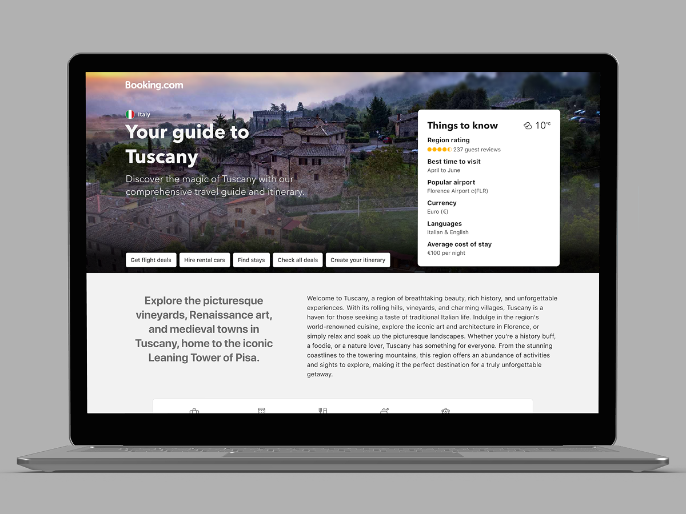

AI-Powered Dynamic Travel Itinerary Generator
Using AI strategically across research, design, and prototyping to transform scattered travel planning into personalized, comprehensive itineraries delivered in 48 hours.

Executive Summary
Replace 50 browser tabs with one AI-generated, personalized travel itinerary page.
Strategic AI usage at every stage: research (Gemini, NotebookLM), design (Figma AI), prototyping (Google AI).
Won Top 3 in hackathon; 70% faster design process; full team alignment in under 8 hours.
Functional, WCAG 2.1 AA compliant prototype demonstrating AI-augmented design workflow.
Problem: Information Overload vs. Planning Clarity
Current State (The Chaos)
- •Users visit 10+ websites to plan one trip
- •Hotel guides on one site, restaurants on another, activities elsewhere
- •Generic content not tailored to traveler profile ("family of 4")
- •Hours spent manually compiling and organizing scattered information
Vision (The Solution)
- •One comprehensive, AI-generated itinerary page
- •Accommodations, dining, activities, logistics—all in one place
- •Personalized to specific query (family size, duration, location)
- •Reduce planning time from hours to minutes
AI-Augmented Design Process: 4 Phases in 48 Hours
Rather than treating AI as a "magic button," I used it strategically as a design accelerator—freeing up time for human judgment on user needs, strategic decisions, and accessibility.
AI-Powered Research & Pattern Discovery
Used Google Gemini to analyze dozens of real travel search queries ("2 day itinerary for family of 4 in Tuscany Italy"). Identified patterns: traveler profile (family size, age), trip parameters (duration, budget), core needs (hotels, dining, activities), and context-specific requirements (accessibility, dietary restrictions).
Used NotebookLM to synthesize research from top travel sites (TripAdvisor, Lonely Planet, blogs). Extracted common content structures, identified information hierarchy patterns, mapped content types needed, and analyzed gaps in existing solutions.
💡 Key Insight:
Users need a single, scannable page with day-by-day structure, personalized recommendations, and actionable next steps. Generic listicles don't solve the planning problem—context-aware, synthesized itineraries do.
Rapid Wireframing with Figma AI
Armed with research insights, I prompted Figma AI with structure requirements from NotebookLM. Instead of manually sketching layouts for hours, Figma AI generated 5-6 layout variations in minutes.
Refined concepts focusing on: scannable hierarchy (day headers, collapsible sections), personalization indicators ("Perfect for families"), actionable design (booking CTAs, add-to-calendar), and mobile-first approach.
⚡ Impact:
FigJam brainstorming session aligned entire team in under 2 hours. Copywriters knew tone needed, engineers understood data requirements, PMs prioritized MVP features.
High-Fidelity Mockups & AI Content
Used Figma AI to generate high-fidelity mockups. Iterated on visual design (clean, modern interface with travel imagery), component consistency (reusable cards for hotels/restaurants/activities), and responsive layouts (mobile and desktop).
Used Google Gemini to generate realistic sample content (hotel descriptions, restaurant reviews, activity details) matching tone and length requirements. Made the prototype feel real, helping stakeholders visualize final experience.
Functional Prototype with AI-Generated Code
To bring design to life within 48-hour deadline, used Google AI to generate working HTML prototype. Provided Figma mockups and design specs; AI generated: semantic HTML with accessibility best practices (ARIA labels, keyboard navigation), responsive CSS (flexbox layouts, mobile breakpoints), and interactive JavaScript (collapsible sections, map integration, booking CTAs).
Reviewed and refined code to ensure: WCAG 2.1 AA compliance (color contrast, keyboard accessibility), performance optimization (lazy loading images), and design fidelity (pixel-perfect match).
Strategic Assessment (SWOT)
Strengths
AI-augmented workflow reduced design time by 70%; cross-functional alignment in under 8 hours; accessibility-first approach even in fast-paced environment.
Opportunities
Scalable to any destination, traveler profile, or trip duration; potential integration with booking APIs for seamless reservation experience.
Weaknesses
AI-generated content requires human review for accuracy and brand voice; dependent on quality of input data from travel APIs.
Threats
AI tools evolve rapidly; maintaining expertise across multiple platforms (Gemini, Figma AI, etc.) requires continuous learning.